Date: 2026-05-25 · 28 datasets × 50 repeats × budgets [10, 20, 30, 50] · runtime 48.6 min · ↩ Exp 9 (8 datasets) · ↑ index
Same methodology as Exp 9: pool-based active optimization on lookup tables; metric = best d2h found within an evaluation budget; normalized win score 100·(1 − (d2h(best) − d*)/(d₀ − d*)) where d* and d₀ are the min and median d2h over the full pool; 5 methods (Random, TPE, Greedy surrogate, INGS, SMAS); budgets 10/20/30/50; 50 repeats.
data/optimize/config/;
Health-ClosedIssues concatenated from 12 files in data/optimize/hpo/
(~120k row pool of disjoint sampling sweeps).
Scrum1k/10k/100k explicitly excluded; to be run separately.
Each step scores every unrevealed pool row exhaustively (no candidate subsampling), matching Exp 9.
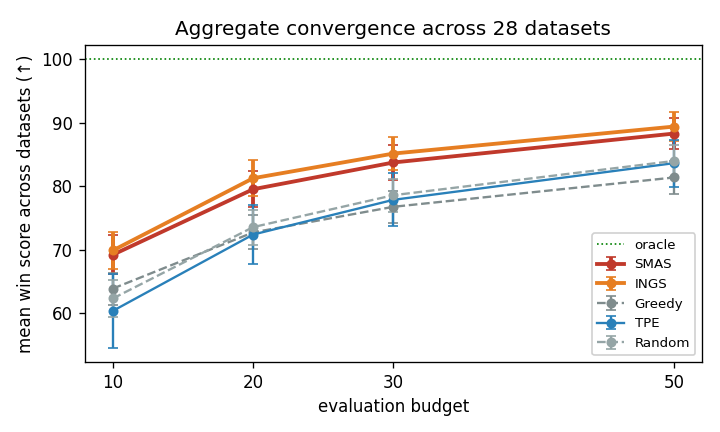
Cell color: vs TPE (green = significantly higher / win, yellow = tie, red = lower). Bold = best per dataset. Win = 100·(1 − (d2h(best) − d*)/(d₀ − d*)); higher is better.
| Dataset | pool×dim | SMAS | INGS | Greedy | TPE | Random |
|---|---|---|---|---|---|---|
| SS-A | 1343×3 | 81.7 | 79.2 | 73.2 | 45.0 | 77.4 |
| SS-B | 206×3 | 100.0 | 100.0 | 100.0 | 66.1 | 72.1 |
| SS-C | 1512×3 | 75.7 | 75.9 | 74.2 | 1.9 | 74.5 |
| SS-D | 196×3 | 71.9 | 77.1 | 74.0 | 82.2 | 77.1 |
| SS-E | 756×3 | 84.6 | 90.1 | 70.4 | 96.7 | 70.9 |
| SS-F | 196×3 | 65.2 | 66.9 | 69.6 | 72.9 | 81.8 |
| SS-G | 196×3 | 63.6 | 63.0 | 68.9 | 61.5 | 78.9 |
| SS-H | 259×4 | 96.7 | 99.3 | 92.3 | 66.7 | 80.3 |
| SS-I | 1080×5 | 86.1 | 86.4 | 68.5 | 58.2 | 74.3 |
| SS-J | 3840×6 | 96.1 | 97.4 | 77.0 | 96.2 | 88.6 |
| SS-K | 2880×6 | 81.7 | 82.4 | 82.4 | 92.3 | 73.4 |
| SS-L | 1023×10 | 98.9 | 99.2 | 90.9 | 96.5 | 86.6 |
| SS-M | 864×15 | 98.5 | 98.4 | 82.6 | 98.6 | 97.2 |
| SS-N | 53662×17 | 59.8 | 61.2 | 52.5 | 52.7 | 41.2 |
| SS-O | 972×10 | 92.8 | 90.2 | 79.1 | 87.1 | 77.0 |
| SS-P | 1023×10 | 98.9 | 99.2 | 90.9 | 96.5 | 86.6 |
| SS-Q | 2736×12 | 97.3 | 94.8 | 88.5 | 96.9 | 94.0 |
| SS-R | 3008×13 | 83.6 | 84.5 | 71.1 | 79.9 | 78.8 |
| SS-S | 3840×6 | 87.0 | 95.5 | 86.2 | 63.1 | 91.6 |
| SS-T | 5184×12 | 97.8 | 98.0 | 86.4 | 95.3 | 92.8 |
| SS-U | 4608×17 | 96.8 | 96.9 | 75.4 | 94.8 | 92.7 |
| SS-V | 6840×16 | 83.7 | 91.9 | 63.9 | 95.3 | 77.5 |
| SS-W | 65536×16 | 57.9 | 60.2 | 63.3 | 54.6 | 48.7 |
| SS-X | 86058×11 | 55.2 | 61.8 | 38.1 | 74.2 | 50.9 |
| Apache_AllMeasurements | 192×8 | 95.0 | 94.6 | 96.3 | 96.6 | 89.0 |
| X264_AllMeasurements | 1152×13 | 98.7 | 99.4 | 87.9 | 97.9 | 97.2 |
| SQL_AllMeasurements | 4653×39 | 63.4 | 62.6 | 67.5 | 71.0 | 67.7 |
| Health-ClosedIssues | 120000×4 | 75.9 | 77.9 | 77.7 | 88.8 | 81.2 |
| Method | N=10 | N=20 | N=30 | N=50 |
|---|---|---|---|---|
| SMAS | 69.2 | 79.5 | 83.7 | 88.3 |
| INGS | 69.9 | 81.2 | 85.1 | 89.4 |
| Greedy | 63.9 | 72.7 | 76.7 | 81.4 |
| TPE | 60.3 | 72.4 | 77.8 | 83.6 |
| Random | 62.3 | 73.5 | 78.6 | 84.0 |
| Comparison | N=10 | N=20 | N=30 | N=50 |
|---|---|---|---|---|
| SMAS vs TPE | p=0.137 | p=0.058 | p=0.142 | p=0.105 |
| INGS vs TPE | p=0.164 | p=0.029 win | p=0.127 | p=0.123 |
| Greedy vs TPE | p=0.767 | p=0.836 | p=0.863 | p=0.903 |
| Random vs TPE | p=0.936 | p=0.800 | p=0.807 | p=0.891 |
| Comparison | N=10 | N=20 | N=30 | N=50 |
|---|---|---|---|---|
| SMAS vs TPE | 8W/7T/13L | 13W/4T/11L | 11W/7T/10L | 14W/7T/7L |
| SMAS vs Greedy | 9W/8T/11L | 12W/6T/10L | 14W/6T/8L | 15W/10T/3L |
| SMAS vs Random | 17W/5T/6L | 19W/4T/5L | 20W/3T/5L | 22W/2T/4L |
| INGS vs TPE | 8W/6T/14L | 12W/7T/9L | 14W/5T/9L | 15W/8T/5L |
| INGS vs Greedy | 10W/9T/9L | 13W/7T/8L | 14W/5T/9L | 16W/7T/5L |
| INGS vs Random | 13W/11T/4L | 21W/2T/5L | 21W/3T/4L | 23W/1T/4L |
y = mean win score across 50 repeats, SEM error bars. Dotted green = oracle (100). Each plot ~32% width; full-size by clicking.
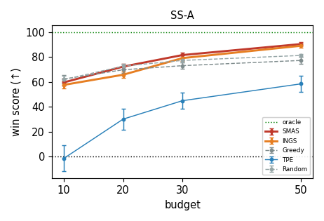
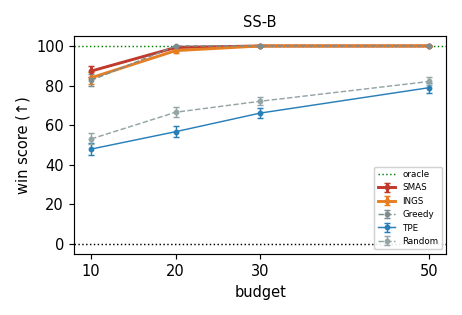
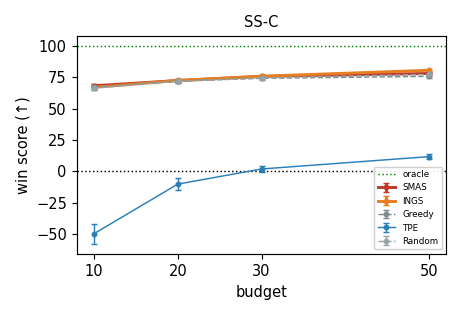
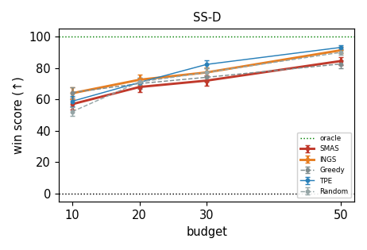
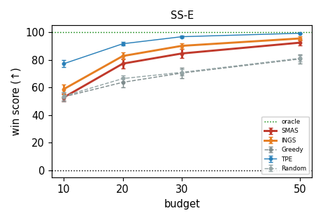
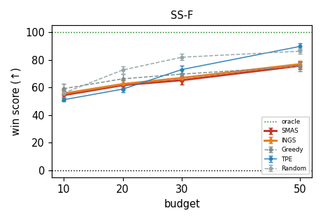
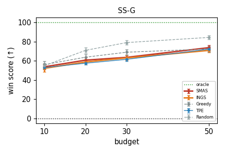
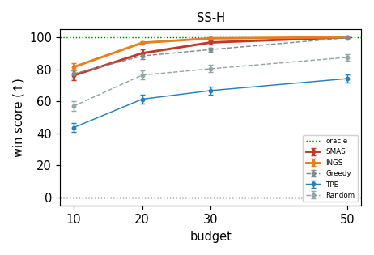
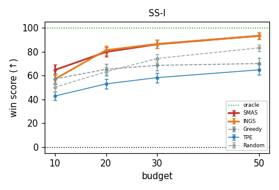
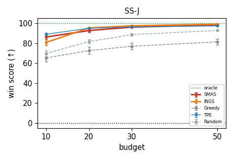
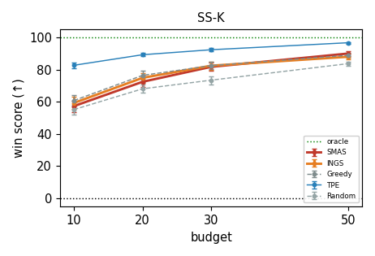
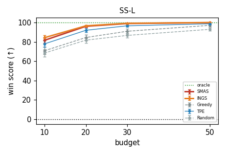
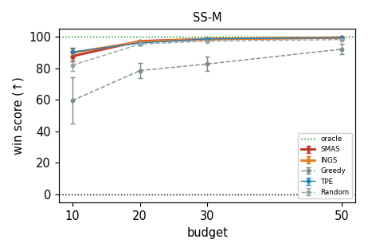
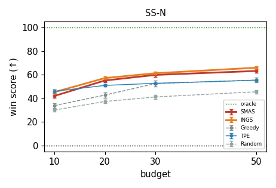
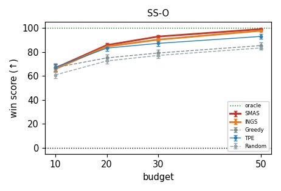
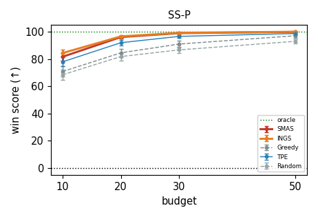
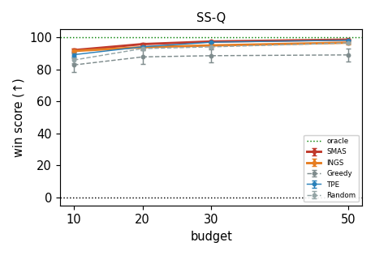
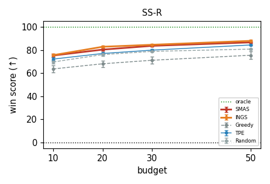
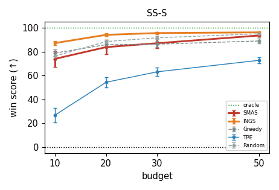
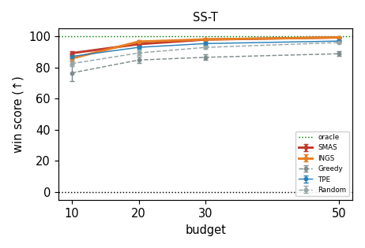
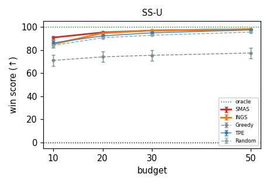
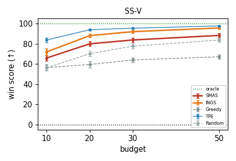
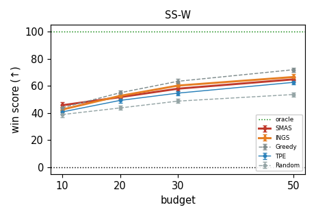
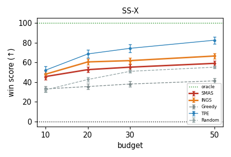
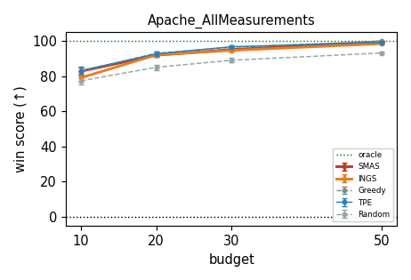
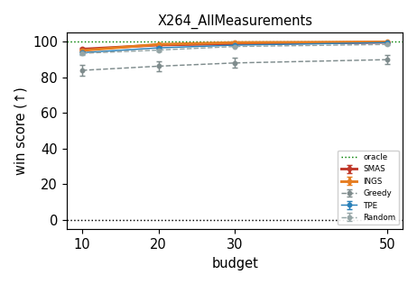
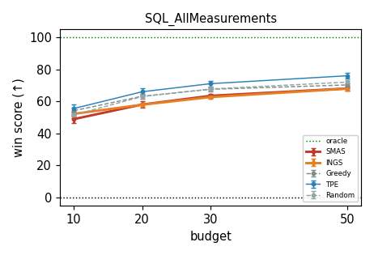
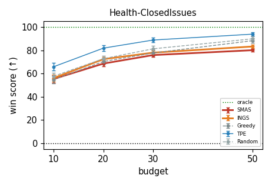
The smoothness signal is real but the TPE-beating claim weakens with wider coverage. Both INGS and SMAS comfortably beat the no-smoothness Greedy ablation at every budget on aggregate, confirming the smoothness machinery (RBF + anti-Laplacian + UCB) carries real information beyond a naïve surrogate. But where Exp 9 reported SMAS beating TPE 5W/1T/2L at N=30 on 8 datasets, on the 28-dataset set the same comparison is 11W/7T/10L — a near-tie. INGS does slightly better (14W/5T/9L) and is the only method to reach a significant paired Wilcoxon vs TPE at any budget (N=20, p=0.029). The honest reading: the Exp-9 dataset selection was favorable; the smoothness-aware methods are competitive with, not dominant over, TPE in this regime.
INGS ≥ SMAS holds at scale. Across both N and breadth of datasets, INGS edges out SMAS slightly (mean win at N=30: INGS 85.1 vs SMAS 83.7; INGS is the only one significant vs TPE). This reinforces Exp 9b's finding that the SMAS β-controller doesn't earn its complexity — on a 3.5× larger evaluation set, the simpler INGS is at least as good.
Where TPE wins. Looking at the per-dataset table, TPE beats the surrogate methods most clearly on (a) the largest pools (SS-X at 86k, SS-W at 66k, Health at 120k), and (b) the highest dimensions (SQL at 39 dims, Health at multiple objectives). Both are regimes where the RBF surrogate over a small set of evaluated points predicts poorly: either because the pool is too vast to cover with 50 samples, or because the input space is too high-dim for an RBF in only ~50 points to interpolate meaningfully. TPE's KDE, which doesn't try to model the response surface globally, scales better here.
Where INGS/SMAS win. The clearest gains are on the smaller, lower-dim datasets (X264, several SS-* in the 3–8 dim, 200–7000 pool range) — exactly the regime where the RBF can interpolate well from a few dozen observations. This is consistent with the paper's smoothness hypothesis: the smoothness-aware acquisition exploits a property (low landscape curvature) that's most visible when the surrogate has a fighting chance of being accurate.
Random is competitive. The mean win for Random matches or exceeds TPE at every budget on this set (N=30: Random 78.6, TPE 77.8). This isn't a TPE bug — it's a well-known property of pool-based config tuning that random is a strong baseline, particularly when the snap-to-nearest-row mapping disrupts TPE's density model.